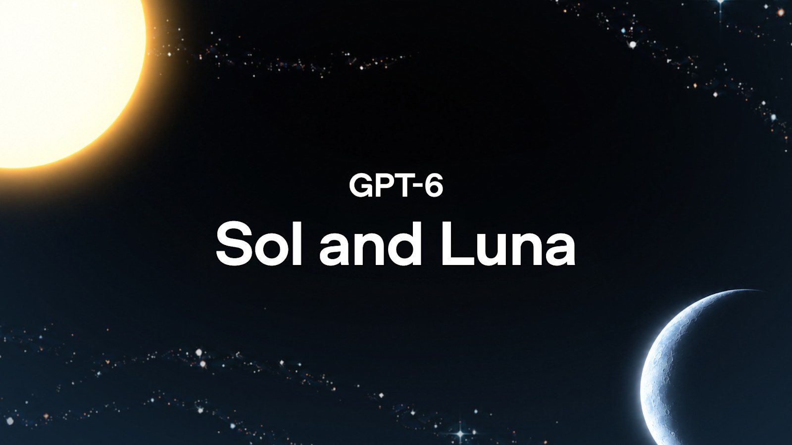

Good morning. On September 22, Anthropic shipped Claude Opus 5.5 — a cheaper, faster flagship aimed squarely at thinning OpenAI's pricing moat. Roughly 90 minutes later, OpenAI filled the news cycle with a counterpunch of its own: GPT-6 Sol and GPT-6 Luna, the mid and low tiers of the GPT-6 family, trained with the same methods as the flagship GPT-6 Astra and sold at half the price of their GPT-5.6 namesakes. Sol — the coding-and-agents tier — drops to $2 / $10 per million tokens; Luna, the high-volume workhorse, to $0.10 / $0.50. The pitch is that OpenAI can now do at two rungs below its flagship what its competitor does at its own flagship's price, and the first independent scorecards mostly agree — but the finer print shows the intelligence barely moved.
The story here is that September 22 was a pincer move from two directions at once: Anthropic came for OpenAI's mid-market with a flagship-class model at a 40% discount, and OpenAI answered by dragging the GPT-6 label — Astra's generation — down into the commodity tier at a 50% discount. For context: GPT-6 Astra landed on September 4 at $10 / $50, and GPT-5.6's same-named tiers sold at $4 / $20 (Sol) and $0.20 / $1.20 (Luna). Both new models inherit Astra's cleaner communication style and its alignment work, but the benchmark story is where the asterisks begin: on several tests the new models score below the GPT-5.6 models they replace at max effort. This is a pricing-and-reliability launch far more than an intelligence one — which is exactly the point OpenAI is trying to win. Here's the complete breakdown.
What: GPT-6 Sol and Luna, the mid and low tiers of OpenAI's GPT-6 family — trained with the same methods as GPT-6 Astra, priced 50% below GPT-5.6 (Sol $2 / $10, Luna $0.10 / $0.50 per million tokens) with 90%-off cached reads and improved prompt caching.
When: Announced September 22, 2026 — roughly 90 minutes after Anthropic's Claude Opus 5.5 — available that day in ChatGPT Work and Codex (Plus, Pro, Business, Enterprise, Edu), with Free and Go users getting Luna in the desktop app. API model IDs gpt-6-sol and gpt-6-luna.
Why it matters: OpenAI is betting the frontier's next battleground is cost per completed task, not leaderboard points. Sol matches Claude Fable 5.1 on merge-ready code at far lower cost and roughly halves hallucination; Luna undercuts GPT-5.6 Luna's price while matching its intelligence. But on some max-effort benchmarks both models score below the GPT-5.6 tiers they replace — the trade is real, and independent scorecards confirm it.
What moved: the sun-and-moon counterpunch, explained
The sequence matters more than either release in isolation. On the morning of September 22, Anthropic presented Opus 5.5 as the proof that a flagship can be both strong and 40% cheaper to run. Roughly ninety minutes later, OpenAI responded by taking its newest generation and discounting it outright. GPT-6 Sol — the mid tier, $2 / $10 per million input/output tokens — and GPT-6 Luna — the budget tier, $0.10 / $0.50 — are the same generation as GPT-6 Astra, trained "with similar methods" and carrying Astra's advances in professional work, factuality, coding, computer use, and alignment into "faster, more affordable models." The price cut is a straight 50% versus GPT-5.6 promotional pricing on both tiers.
What did not move: the flagship position. OpenAI is explicit that "GPT-6 Astra continues to be our best model across the board." Sol is aimed at complex, expensive work — coding agents, tool-heavy automation — where cost per task decides whether a workload is runnable; Luna is aimed at "high-volume tasks with a clear goal," priced to be the default for bulk extraction and summarization at scale. Neither is OpenAI's most intelligent model, and the company isn't pretending otherwise. This is a distribution play wearing a product-launch's clothes.
The fine print: pricing, caching, and who gets what
The headline is a flat 50% cut on both tiers. The fine print adds three modifiers that matter far more to real workloads than the sticker price: long prompts cost 2× on input and cache reads and 1.5× on output above 272K tokens; Batch and Flex are half price; and Fast mode is double. Cached input reads are 90% off — $0.20/M for Sol, $0.01/M for Luna — which is the number any agent-builder actually cares about, since agent loops re-send most of their context on every turn.
OpenAI also shipped what it calls "improved prompt caching for GPT-6" the same day: higher default cache-hit rates, explicit cache breakpoints so developers choose where cached prefixes end, a Prompt Caching Dashboard, and — the piece agent-builders will test hardest — the ability to change reasoning effort or toggle tools mid-conversation without invalidating the cache. GitHub reports that across billions of Copilot requests, these changes cut the share of prompt tokens needing fresh processing by more than 50%. Availability: Sol and Luna are live in ChatGPT Work and Codex for Plus, Pro, Business, Enterprise, and Edu users; Free and Go users can use Luna in the desktop app. Neither model is in regular Chat yet, neither has an open Terra sibling (GPT-6 catalog lists gpt-6-astra, gpt-6-sol, gpt-6-luna — GPT-5.6 Terra is a different generation), and tokens run past a 922K-token max input in a 1.05M-token window with 128K max output.
gpt-6-sol, gpt-6-luna — GPT-6 generation, trained with same methods as GPT-6 AstraThe professional-work evidence: cost per task is the new ruler
OpenAI's own tables frame everything as score-versus-cost, not raw leaderboards. On AutomationBench 1.0.6 — end-to-end business workflows across 47 tools in sales, marketing, operations, support, finance, and HR — GPT-6 Sol at xhigh effort scores 33.2% at $0.27 per task. That beats Claude Opus 5 at max effort (26.9% at 11.1× the cost), Claude Fable 5.1 with an Opus 5 fallback (31.4% at >8.9× — and OpenAI notes that Fable's published cost understates its real bill, because the Opus 5 fallback fires on ~40% of tasks and its cost isn't reported), and GPT-6 Astra itself at low effort (30.3% at 3.9×). The sibling story: Luna at high effort improves on its predecessor by 5.4 percentage points at 58% lower cost per task.
On Agents' Last Exam V1, the long-horizon professional-work test spanning 55 sub-industries, GPT-6 Sol at max effort scores 56.4% — above Claude Opus 5's highest score in the evaluation (55.9%) at 60% lower cost per task. GPT-6 Astra still leads at 59.3%; Luna hits 50.9% at roughly $0.15 per task. And on OpenAI's internal factuality evaluation — built from real user-flagged errors, and deliberately harder than typical usage — GPT-6 Sol makes about half as many mistakes as GPT-5.6 Sol, approaching Astra-level reliability; Luna at higher effort levels "matches GPT-5.6 Sol at about a hundredth its cost."
Coding and computer use: matching Fable 5.1 on merge-ready work
The coding story is where OpenAI leans hardest. On FrontierCode 1.1 Main — Cognition's test of whether an agent's changes are actually mergeable into a real codebase, graded on test quality, scope discipline, code style, and adherence to standards — GPT-6 Sol scores 49.3%, up from 47.5% for GPT-5.6 Sol, and OpenAI says it "matches Claude Fable 5.1 at xhigh at much lower cost." Luna lands at 42.4% at roughly $0.11 per task. On DeepSWE v1.1, the long-horizon software-engineering benchmark, GPT-6 Sol at max effort scores 68.8% — within 1.1 points of Claude Fable 5's 69.9% at xhigh, at approximately 80% lower cost per task ($2.74 vs $13.41 per Artificial Analysis' chart readings). GPT-6 Luna at max scores 66.6%, comparable to Claude Opus 5 and Fable 5 at medium effort, while costing 93% less than Opus 5 and 96% less than Fable 5 per task.
Around coding, the cost-of-sustained-use argument gets a corporate footnote: OpenAI says internal daily API-valued token usage has "exceeded $600 for the median researcher and $7,000 for researchers at the 90th percentile," and that its own coding-agent usage "has grown exponentially." That's the economic justification for why a company that prides itself on frontier capability is now shipping cheap tiers with benchmark regressions in them: the constraint on agents is no longer capability, it's the running bill. On OSWorld 2.0 offline (long-horizon computer use), Sol at xhigh hits 60.5% — similar to Claude Opus 5 at medium (60.3%) at ~80% lower cost — and Luna at max (52.7%) exceeds GPT-5.6 Sol at medium for one tenth of its cost, while Astra still owns the top of the chart (73.5% at max). OpenAI also brought Astra's communication style down: "more clarity, less jargon, fewer odd turns of phrase, fewer low-value details, and slightly shorter answers."
The independent read: reliability improved, intelligence barely moved
Independent evaluator Artificial Analysis ran both models on launch day, and its verdict largely matches OpenAI's framing with one crucial correction: the gains are cost and factuality, not intelligence. On its Intelligence Index v4.3 at max effort, GPT-6 Sol scores 48 (up from 47 for GPT-5.6 Sol) and Luna stays flat at 37 — for comparison, Claude Opus 5.5 registered 58 the same morning and GPT-6 Astra 53. Cost per Intelligence Index task roughly halves for Sol ($1.06 vs $1.99) and falls about 60% for Luna ($0.07 vs $0.18), though Luna burns ~25% more output tokens per task than its predecessor, which eats into the per-token discount.
The hallucination figure is the real upgrade. On AA-Omniscience, GPT-6 Sol's hallucination rate on questions it should decline falls from 92% to 60%, and Luna's from 93% to 77% — matching OpenAI's claim of roughly half as many factual mistakes, and the single most important number for anyone using these models to summarize or extract from documents. It's still more than three-quarters wrong on the questions Luna should refuse, so grounding in sources remains mandatory. On the Coding Agent Index v1.5, Sol scores 57 (up from 55), landing on the Pareto frontier at about $3 per task while the top of that chart — Fable 5.1 and GPT-6 Astra at 62, Opus 5 at 60 — costs $7.50 to $12.50 per task.
"GPT-6 Sol and Luna are a pricing and reliability release more than an intelligence release. Their independent intelligence scores barely move... What changes is cost per task, which roughly halves, and hallucination rates, which drop sharply."
— Tosea.ai, "How to Use GPT-6 Sol and Luna" (Sep 23, 2026)The counter-reading: where both models regress vs what they replace
First asterisk — the transparent one OpenAI prints itself. On DeepSWE v1.1, GPT-6 Sol at max effort scores 68.8% versus GPT-5.6 Sol's 72.7%; on OSWorld 2.0 max, Sol hits 64.4% against GPT-5.6 Sol's 66.2%. At the very top of each model's effort range, the new tiers are roughly as capable as the GPT-5.6 models they replace — sometimes a little less — at a much lower cost per task. That is exactly the "cost–intelligence curve" OpenAI claims to lead, and it is not the same as "smarter than GPT-5.6." Anyone already running GPT-5.6 Sol at max purely for quality should test before switching.
Second asterisk — Luna's coding regression is independent, not self-reported. Artificial Analysis measured GPT-6 Luna's Coding Agent Index at 41, down 2 points from GPT-5.6 Luna, with falls on SWE-Atlas-QnA (44% vs 49%) and DeepSWE v1.1 (64% vs 66%). Luna's extra output tokens (51K vs 41K per task) partially offset its per-token discount, so the "intelligence same, cost lower" story is cleanest for high-volume, tool-light workloads — not for code.
Third asterisk — the "90 minutes after Opus 5.5" framing cuts both ways. A counterpunch this fast is also a reactive release. OpenAI shipped GPT-6 Sol and Luna without the pre-release external evaluation Anthropic showcased for Opus 5.5, and the pricing drama (50% off) follows the exact playbook Anthropic used hours earlier (40% off) — both years' budget holds have now armed a price war where the market's cheapest frontier-capable tiers are falling every few weeks. The last asterisk is hallucination ceilings: even after the improvement, Luna is still wrong on 77% of the questions it should decline, and Sol on 60%, versus 59% for Opus 5.5 and 51% for GPT-6 Astra. Near the bottom of the price curve, cheap tokens still buy a lot of confidently wrong answers.
What to watch next
- Whether the price cut sticks. GPT-5.6 Sol already took a 20%+ cut in August and Luna an 80% cut in July; GPT-6 Sol/Luna now halve again. Watch whether the GPT-5.6 tiers get re-positioned or quietly retired, and whether a GPT-6 Astra price cut follows.
- Independent re-benchmarks at default effort. Artificial Analysis' full model pages track default (medium) cost-per-task — that is the setting enterprises will actually run, not the max-effort leaderboards in the launch post.
- Adoption in ChatGPT Work and Codex. The interesting test of OpenAI's "cheap agents" claim is whether Copilot/ChatGPT Work routing shifts real coding load from Astra to Sol and whether teams report the claimed per-task halvings.
- The caching dashboard. Higher hit rates, explicit breakpoints, and non-breaking reasoning-effort changes are the parts agent-builders can verify within a week. GitHub's ">50% fresh-processing cut" is the number to pressure-test.
- Anthropic's answer. Opus 5.5's entire premise is per-task cost; Sol and Luna undercut that argument at the mid/low tiers. Watch for Sonnet 5.5 and Haiku 5.5 pricing announcements — they reset the same curve one rung down.
The larger context: September 22 was a budget war, twice played
Read together, the two launches on September 22 are the clearest signal yet that the frontier's competitive axis has rotated from intelligence to economics. Anthropic argued, with Opus 5.5, that the flagship itself should cost 40% less to run. OpenAI's reply, ninety minutes later, was to argue that the intelligent frontier no longer needs a flagship at all — that the same generation's methods can be sold as a $2 coding workhorse and a $0.10 bulk-extraction utility, with 90%-off cache reads for the loops that actually run them. One lab took the crown off the flagship; the other showed how to sell the crown in halves.
The consequence is compound. Agent builders can now choose a model by cost per completed task across a price range that spans four orders of magnitude — GPT-6 Luna at $0.10 input to GPT-6 Astra at $50 output — all within one family, one API, one tooling surface. That is a routing problem, not a scarcity problem, and it is exactly what makes frontier AI "abundant": the marginal cost of an acceptable answer keeps falling even as the price of the best answer stays premium. OpenAI's bet is that abundance wins — that teams will spend less money and more iterations, and that the market's default model will be the one you can afford to leave running overnight.
The TIMPS verdict
This is OpenAI's most strategically legible release of 2026 — and its least flashy. GPT-6 Sol and Luna do not raise the ceiling; they widen the base. Everything about the package — 50% price cut, 90%-off cached reads, non-breaking cache controls, better default hit rates, halved hallucination, Astra's communication style — is aimed at the two things agent economics actually care about: cost per completed task and how long a model can be trusted to run unattended.
Treat OpenAI's benchmark framing as directional, not exact. The per-task cost multiples (Opus 5 at 11.1× Sol, Fable 5.1 at >8.9×) are genuinely striking, but the comparison cleanest supports OpenAI because the × figures are OpenAI's reads of competitors' published runs. The independent scorecards carry the real news: cost per task roughly halves, hallucination roughly halves, and intelligence barely moves — Sol +1 index point, Luna flat, with real max-effort regressions on DeepSWE and OSWorld. This is a deluxe price cut with a reliability fix folded in, and nobody should mistake it for a capability jump.
The 90-minute counterpunch is the story even bigger than either model. Anthropic and OpenAI are now openly trading on the same axis — per-task cost — and the cadence (Opus 5.5 at 07:00, Sol/Luna at 08:30, so to speak) makes the price curve the arena. For buyers, that is unambiguously good: the budget frontier is falling fast and the reliability of the cheap tier is finally improving. For the labs, it is a warning that differentiation is compressing into a single number.
What to actually do. If you run GPT-5.6 Luna today, switch — same intelligence, ~60% lower cost per task, and hallucination nearly halved; just re-check any coding use. If you run GPT-5.6 Sol at max purely for quality, test GPT-6 Sol before switching — the savings are real but DeepSWE and OSWorld dipped at the top effort level. Keep a frontier model (Astra or Opus 5.5) for the steps where one wrong answer costs more than the tokens, and watch the default-effort cost curves — not the launch-day leaderboards — for where this actually lands.
Facts in this piece were compiled from OpenAI's official "Introducing GPT-6 Sol and Luna" announcement (September 22, 2026) and its benchmark, pricing, and caching data; the OpenAI "Better prompt caching for GPT-6" announcement (September 22, 2026); the OpenAI GPT-6 Sol and Luna API model documentation; Reuters and TechCrunch coverage of the launch; Artificial Analysis' GPT-6 Sol and Luna evaluations (Intelligence Index v4.3, Coding Agent Index v1.5, AA-Omniscience); and Tosea.ai's independent guide to GPT-6 Sol and Luna (September 23, 2026), including its transcriptions of OpenAI's effort-level charts and its AA-Omniscience hallucination readings. All OpenAI benchmark figures are OpenAI-reported unless attributed to Artificial Analysis in the text; competitor figures (Claude Opus 5, Claude Fable 5/5.1) are as reported by their respective companies. Artificial Analysis figures reflect its own runs. This is news analysis by an independent publication — not investment advice, not an endorsement of OpenAI or Anthropic, and not a guarantee that any benchmark figure will reproduce in production.
Sources
- OpenAI — "Introducing GPT-6 Sol and Luna" (Sep 22, 2026, primary source)
- OpenAI — "Better prompt caching for GPT-6" (Sep 22, 2026)
- OpenAI API docs — GPT-6 Sol model documentation (specs, pricing, context)
- OpenAI API docs — GPT-6 Luna model documentation (specs, pricing, context)
- Reuters — "OpenAI expands GPT-6 lineup with cheaper Sol and Luna models" (Sep 22, 2026)
- TechCrunch — "OpenAI launches GPT-6 Sol and Luna, boasting lower cost and fewer mistakes" (Sep 22, 2026)
- Artificial Analysis — "GPT-6 Sol and Luna push the cost efficiency frontier" (independent evaluations)
- Tosea.ai — "How to Use GPT-6 Sol and Luna: Complete Guide to Benchmarks, Pricing and Tiers" (Sep 23, 2026)
- Decrypt — "OpenAI Launches GPT-6 Sol and Luna Minutes After Anthropic Drops Claude Opus 5.5" (Sep 22, 2026)
- SiliconANGLE — "Anthropic releases Claude Opus 5.5 and OpenAI counters with two cheaper GPT-6 models" (Sep 22, 2026)
- OmniaKey — "GPT-6 Sol: Release Date, Price and What's Real" (spec catalog: 922K max input, effort ladder, no gpt-6-terra)
One story a day,
explained properly.
New TIMPS deep dives land regularly — paired with the five-signal PostCard every morning. Free forever.
Next: An agent read a login code out of your inbox. A prompt is not a permission. →
← Browse all deep dives